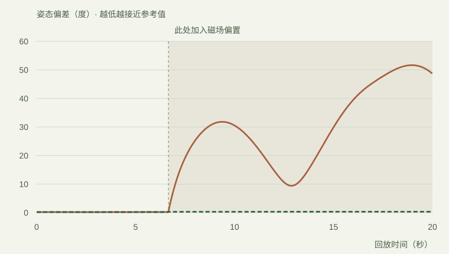
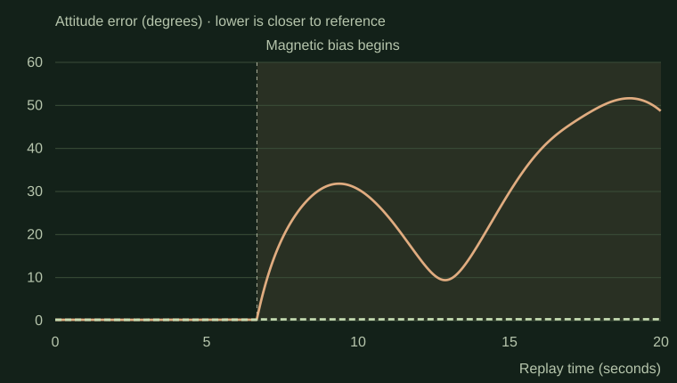
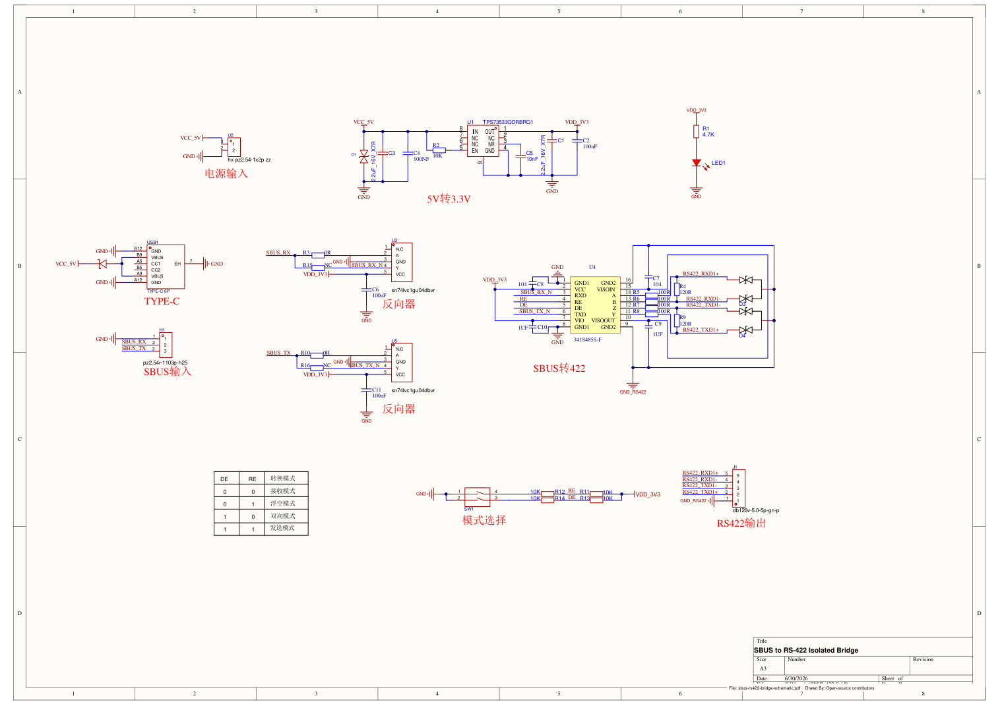

定位数据如何送到其他设备，受干扰时如何判断朝向，不同接口如何互通，相机如何输出图像。四个项目分别处理这些问题；用途、具体工作和现有成果都在本页。
01GNSS / RTK 基站
dpiny
把定位模块做成可维护的基站设备
基站向其他定位设备发送参考数据，供它们修正定位结果。dpiny
围绕这一用途整合供电、双路输出和维护软件；除了发送数据，还要能够配置、诊断和从重启中恢复。
- 关键难点
-
设备重启后，电脑上仍可能显示端口，但配置指令没有回应。
- 具体处理
-
把重启前后能否响应纳入自动检查，并与构建、烧录和输出数据校验一起回归。
已公开固件、工具与历史台架记录；这里展示记录复核，不是本次硬件复测。
真实材料 / 历史台架记录
重启之后，维护通道能否恢复？
-
01
PASS
-
02
PASS
-
03
PASS
-
04
输出数据校验
6 秒采集：28 帧通过校验，0 帧失败
PASS
公开日志摘录 · 非实时终端
PASS: USB CDC shell responded (before software reset)
>> reset
PASS: USB CDC shell responded (after software reset)
PASS: USB CDC recovered after software reset
2026-05-20 公开台架记录。参考固件
eb47ff1；结论限于这一轮记录和采集条件，不代表长期稳定性或定位精度认证。
实现细节、测试条件与原始资料
系统组成
-
UM982定位与差分数据
-
STM32F407配置与状态管理
-
RS-422 / USB数据与维护接口
实现特点
-
接口分工
-
双路 RS-422 承载 RTCM 数据，USB CDC
提供配置与诊断入口，将外部数据链路与本地维护分开。
-
数据与故障检查
-
按消息类型和 CRC 检查 RTCM 数据流；结合 SWD
寄存器读取与串口日志，定位外设状态及复位问题。
-
调试工作流
-
将构建、烧录、测试和记录整理为 Liakia 工作流，并保留
USB CDC 复位恢复的故障分析、修改与回归记录。
公开进展
已公开硬件架构、固件、工具与台架记录；台架结论仅适用于记录所列条件，不代表
GNSS 精度认证。
深入资料
02飞行估计算法
Aerakia
传感器受到干扰时，仍要判断朝向与倾斜
飞行器需要从传感器读数判断自身的朝向和倾斜，但读数也会受干扰。Aerakia
研究如何融合这些读数，并用相同的运动和干扰输入比较算法表现，让差异能够被重新运行和检查。
- 关键难点
-
一条平滑的曲线不等于正确；磁场变化可能把估计方向持续拉偏。
- 具体处理
-
保留标准配置作对照，用同一组输入检查抗干扰处理的收益与代价。
公开范围是算法与电脑端验证，不是完整飞控；下图来自实际运行的合成回放，并非实飞。
真实材料 / 公开 C 算法实际回放
同样的干扰，两种不同的响应


标准配置抗干扰配置
27.1650°标准配置 · 姿态误差
0.2854°抗干扰配置 · 姿态误差
数值为该合成场景的整体姿态误差
RMSE，越低越好；不是飞行精度或可靠性结论。
本次从公开代码运行 20 秒、100 Hz、固定随机种子 7
的场景。6.66 秒开始加入持续磁场偏置；图中全部采样点来自 C
程序输出，未做平滑拟合。
实现细节、测试条件与原始资料
系统组成
-
输入约定单位、坐标与时间
-
Mahony / ESKF可移植 C99 实现
-
主机验证固定场景与回放
实现特点
-
统一输入
-
统一定义单位、坐标系、时间戳与数据有效性，减少输入约定差异对算法比较的影响。
-
可重复比较
-
使用固定输入和数据回放重复运行算法，检查修改前后的输出行为；文档保留运行方法与覆盖范围。
-
异常与回归
-
通过确定性故障场景和回归检查分析异常输入，分别记录已验证行为和尚未覆盖的情况。
公开进展
已公开算法实现与主机验证资料，不是完整飞控固件；硬件接入、传感器特性和实飞行为仍需独立验证。
深入资料
03隔离接口 / 数据分析
SBUS–RS-422
转换通信接口，不改动控制数据
接收机和下游设备不一定使用同一种电气接口。这个桥接模块把遥控信号转换到隔离的差分链路，目标是让控制数据保持原样；配套分析器用于检查输入和输出是否一致。
- 关键难点
-
输出端有波形，不等于控制数据正确；信号转换和内容检查是两件事。
- 具体处理
-
用硬件完成接口转换，另用浏览器工具逐帧对比；不把采样分辨率以下的延迟写成测量结论。
已公开原理图和分析工具；可编辑设计、PCB
与制造文件仍在整理，不是完整生产包。
真实材料 / 已公开电路原理图
接口转换背后的实际电路

打开完整原理图 PDF ↗
供电、信号反向、隔离收发与差分接口来自公开
PDF。验证报告限定固定供电、短线、室温等条件，不能外推为所有工况下的性能。
实现细节、测试条件与原始资料
系统组成
-
SBUS控制信号输入
-
隔离转换电平与极性处理
-
RS-422差分通信链路
实现特点
-
硬件与分析分工
-
硬件完成隔离、电平与极性转换；浏览器工具负责采集数据的解码、对齐和对比，分别检查电气接口与数据内容。
-
区分采集方法
-
同步采集用于同一时间轴上的时序比较；分次隔离采集用于字节内容对齐，不能直接用来计算传播延迟。
-
注明测量分辨率
-
报告列出采样分辨率与测试条件。界面波形由采集数据重建，不作为示波器实测波形；低于分辨率的差异不作零延迟结论。
公开进展
已公开原理图
PDF、浏览器分析器与对比报告；PCB、BOM、制造文件和可编辑硬件源尚未形成完整发布包。
深入资料
04Linux 相机 / 在研
Splicia
让相机数据进入可继续开发的采集链路
显微视觉平台先要拿到可用的图像，才谈得上测量和自动对准。Splicia
当前的工作集中在 Linux
平台与相机链路调试；后续的视觉、运动控制和操作界面按独立模块规划。
- 关键难点
-
相机被系统发现，并不意味着后续软件已经拿到正确图像。
- 具体处理
-
逐层区分设备识别、驱动、图像链路与应用问题，并把已完成的调试和下一阶段设计分开陈述。
已完成平台与相机链路调试；视觉算法、运动闭环与量化性能尚未完成或验证。
真实材料 / 公开工程范围清单
已经做到哪里，下一步是什么
已完成 / 公开说明
Linux 相机平台调试
设备识别、成像链路和原始图像输出的诊断。
已设计 / 未验收
下一阶段的软件边界
将采集、视觉、运动、界面与记录分开设计。
计划中 / 未实现
视觉判断与自动对准
图像测量、运动闭环与性能指标仍待实现和验证。
公开仓库没有原始生产图像或现场日志；不以概念界面代替运行证据。
依据公开仓库 README
与验证计划整理。这里只展示可公开核实的工程边界，不展示客户图像、私有日志或虚构的运行界面。
实现细节、测试条件与原始资料
系统组成
-
Linux / IMX296设备与驱动
-
媒体管线拓扑与链路配置
-
RAW原始图像输出
实现与规划
-
采集链路调试
-
分别整理设备发现、媒体拓扑与 RAW
输出记录，区分设备、驱动及应用层问题，为后续图像处理提供输入基础。
-
后续模块规划
-
下一阶段按采集、视觉、状态估计、运动控制、UI、日志与回放划分职责和依赖；这些内容目前属于架构设计。
-
界面概念设计
-
以概念稿讨论图像、状态与日志的信息组织；其中图像、曲线和数值均为占位内容，不是运行界面或测试结果。
当前进展
已记录平台与相机调试；视觉几何、双目融合、多轴运动和闭环对准尚未完成。
深入资料
系统原理动效（可选技术阅读）
WORKBENCH / SCROLL STUDIES01 — 04
项目原理示意；动画不代表实测信号或性能结果。